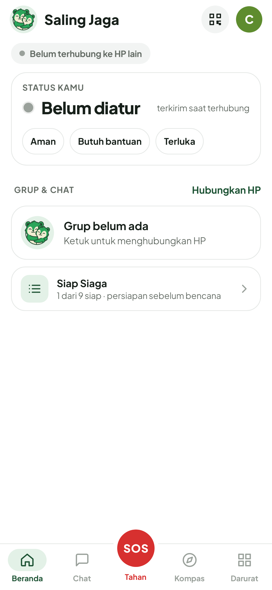
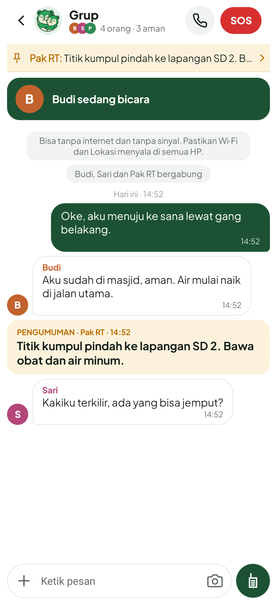

Cara kerja
Tiga langkah, tanpa sinyal.
Pasang sekarang selagi ada internet. Saat sinyal hilang, HP-mu dan HP di sekitarmu bisa langsung saling sambung.
-
Pasang dan isi nama
Pasang di HP-mu dan HP keluarga. Tidak perlu daftar akun, nomor HP, atau email. Cukup tulis namamu.

-
Saat sinyal hilang, sambungkan HP
Nyalakan Wi‑Fi dan Lokasi, buka aplikasinya. HP di dekatmu muncul di daftar. Ketuk namanya, dia ketuk Terima, dan kalian satu grup.

-
Ngobrol dan minta tolong
Chat, tahan tombol untuk bicara seperti walkie-talkie, atau tekan SOS. Semua HP di grup langsung tahu, lengkap dengan jarak dan arahnya.

Kok bisa tanpa internet? HP Android punya Wi‑Fi Direct: Wi‑Fi yang bisa menyambung langsung ke HP lain tanpa router dan tanpa BTS. Saling Jaga memakai itu, jadi pesanmu pindah langsung dari HP ke HP.
Jangkauannya sekitar 50–100 m di tempat terbuka. Kalau ada yang lebih jauh, HP di tengah bisa jadi jembatan yang meneruskan pesan. Lihat soal jangkauan.
- Keluarga saat gempa atau banjir
- Warga satu RT
- Pendaki dan rombongan
- Posko dan relawan
- Sekolah dan kegiatan alam
Yang bisa dilakukan
Semua yang penting saat sinyal hilang.
Bicara seperti walkie-talkie
Tahan tombol, semua di grup mendengar. Bisa juga chat, kirim foto, atau telepon berdua.
SOS ke semua HP
Alarm berbunyi di semua HP grup, lengkap dengan jarak, arah, dan sisa baterai orang yang minta tolong.
Arah ke teman
Kompas menunjukkan arah dan jarak tiap anggota, tanpa internet.
Titik kumpul & absen
Tandai tempat kumpul dan lihat siapa yang sudah aman.
Sirine & senter
Biar mudah ditemukan saat gelap atau tertimbun.
Panduan darurat di HP
Gempa, banjir, longsor, P3K, dan RJP. Tersimpan di HP, terbaca tanpa internet.
Laptop & iPhone lewat browser
Perangkat tanpa aplikasi tetap bisa ikut grup lewat browser, tanpa internet.
Video
Lihat cara kerjanya dalam 32 detik.
Cara pasang
Pasang sekarang, sebelum dibutuhkan.
Pilih perangkatmu. Langkah lengkapnya ada di halaman Cara pasang.
HP Android
Lewat Google Play (sedang uji tertutup, siapa pun boleh ikut), atau pasang file APK langsung. Android 7 ke atas.
Pasang di AndroidiPhone
Belum ada di App Store. Sementara itu, iPhone bisa ikut grup lewat Safari. Daftar untuk ikut uji coba.
Lihat caranyaLaptop & Mac
Windows, Mac, dan Linux ikut grup lewat browser. Tidak perlu memasang apa pun.
Lihat caranyaSegera hadir
Mau dikabari saat versi iPhone siap?
Aplikasi iPhone sudah jadi dan bisa satu grup dengan HP Android. Kami akan membuka uji coba lewat TestFlight, lalu rilis di App Store.
Mau ikut membantu?
Saling Jaga gratis untuk warga dan dibuat secara mandiri. Kalau aplikasi ini berguna untukmu, kamu bisa traktir pengembangnya lewat Trakteer. Dukunganmu membantu biaya seperti akun Apple Developer untuk versi iPhone.
Tanya jawab
Pertanyaan yang sering muncul.
Benar-benar tanpa internet atau pulsa?
Benar. HP boleh tanpa kartu SIM. Yang perlu menyala hanya Wi‑Fi dan Lokasi. Internet hanya dipakai untuk memasang aplikasinya dan, kalau mau, mengunduh peta sekitar.
Apakah orang lain juga harus pasang?
Ya, HP yang mau disambungkan perlu Saling Jaga juga. Karena itu pasang sekarang dan ajak keluarga, tetangga, atau rombongan. Laptop dan iPhone bisa ikut lewat browser, dibuka dari satu HP Android yang memakai Saling Jaga.
Seberapa jauh jangkauannya?
Sekitar 50–100 m di tempat terbuka, lebih pendek di dalam gedung. Kalau rombongan menyebar, HP di tengah bisa jadi jembatan untuk meneruskan pesan. Lihat cara menambah jangkauan.
Apakah pesanku aman?
Tidak ada server dan tidak ada akun. Pesan berpindah langsung antar HP dan terenkripsi. Lihat soal keamanan dan izin.
HP saya tidak menemukan HP teman. Kenapa?
Pastikan Wi‑Fi dan Lokasi menyala di kedua HP, izin Lokasi / Perangkat sekitar diberikan, dan jaraknya tidak lebih dari 50–100 m. Beberapa HP perlu layar tetap menyala saat mencari. Kalau masih gagal, coba sebaliknya: HP teman yang mencari.
Apakah gratis?
Gratis untuk warga, tanpa iklan. Untuk tim SAR, posko, atau institusi yang butuh pelatihan dan kustomisasi, hubungi kami.

Hanya berguna kalau HP di sekitarmu juga punya.
Pasang hari ini, lalu bagikan ke keluarga, tetangga, dan rombongan.